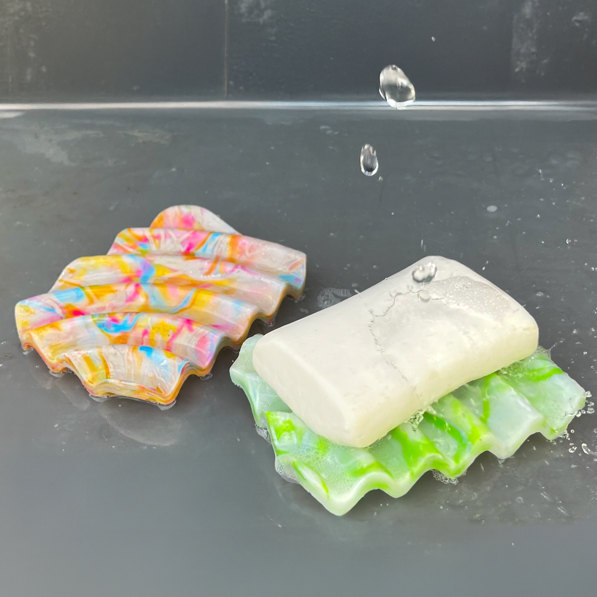
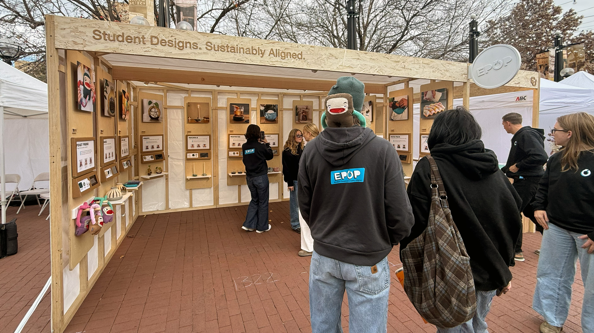
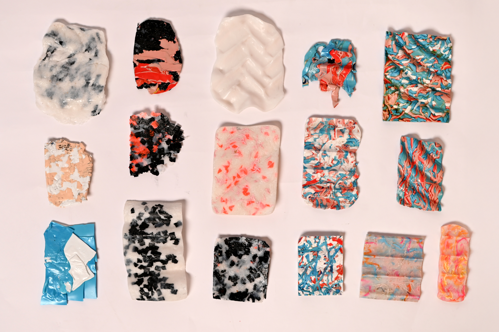

Type
Self Care Item
Year
Fall 2025
Tools
Rhino, Illustrator, Photoshop
Materials
Reclaimed Shampoo Bottles, MDF

Final Prototype
These are photos of the first two soap dishes that I created using my CNC mold. Their ripples naturally channel water away from soap in an aesthetically pleasing manner.
What is EPOP Shop?
EPOP is a student-led sustainable design initiative focused on turning diverted waste into desirable, manufacturable products.


Process
This is an image of my material tests that it took to get to the final product. Through a lot of experimentation, I was finally ablet to achieve the desired material.